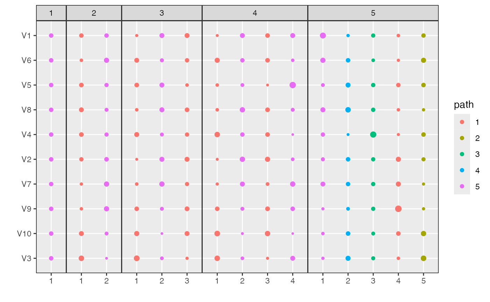

Plot Topics Heatmap
plot_beta.RdThis function plots the \(\beta_{kd}^{m}\) topic parameters across models
\(m\), topics \(k\), and dimensions \(d\). It takes as input a raw
alignment object and then returns a heatmap from the superheatmap package.
The shade of each cell corresponds to the value \(\beta_{kd}^m\) for the
model in panel \(m\), topic in row \(k\), and dimension in column
\(d\). The plot can be restricted to only a subset of models by using the
models argument, which may be either a vector of model names or
numeric indices into the list of models. The dimensions can be filtered by
using the n_features or min_beta arguments -- by default, only
dimensions with at least one topic satisfying \(\beta_{kd}^m > 0.025\) are
displayed.
plot_beta(x, models = "all", min_beta = 0.025, n_features = NULL, ...)
Arguments
| models | Which models to display in the heatmap? Defaults to
|
|---|---|
| min_beta | (optional, default = 0.025) if |
| n_features | (optional) alternative to |
Examples
library(purrr) data <- rmultinom(10, 20, rep(0.1, 20)) lda_params <- setNames(map(1:5, ~ list(k = .)), 1:5) lda_models <- run_lda_models(data, lda_params)#>#>#>#>#>plot_beta(alignment, min_beta = 0)plot_beta(alignment, models = "last")